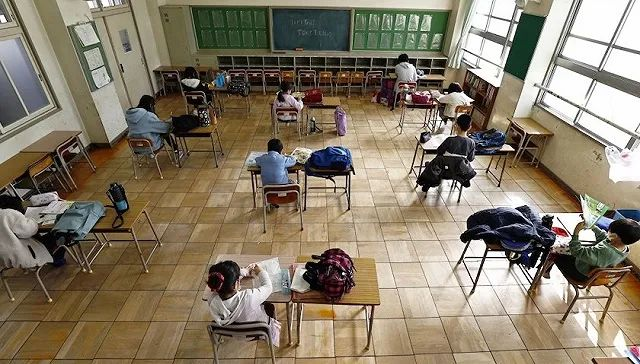

C罗卷入疫情恐慌？意大利确诊1694例！多个市镇被封锁，居民拒戴口罩“要自由”…
原文链接 备份链接 根据当地时间3月1日18时意大利卫生部公布的最近数据，意大利现有新冠病毒患者1577例，死亡34例，治愈83例，累计确诊感染新冠病毒总人数为1694例，较2月29日18时新增566例，其中重症140例，新增5例死亡病 …

图片来源：Kyodo News
“
全球新冠肺炎疫情播报，持续更新。
”
（本文持续更新中。文中段首所示时间为本文更新时间。）
0830【海军因新冠病毒的疑虑要求第六舰队自我隔离】
两名未具名美国海军官员透露，第六舰队下令各舰艇在访问欧洲港口之间要进行为期14天的自我隔离。该命令将使第六舰队与美国太平洋舰队的先前命令保持一致。
0800【累计确诊病例达122例，死亡9例】
据CNN消息，美国疾控中心3日晚通报称，累计确诊新冠肺炎病例达122例，死亡9例。这一数据包括核算检测推定阳性的患者，即在地方实验室检测呈阳性，但还需要疾控中心进一步确认。确诊病例中有48名是从国外撤回的美国公民
0800【美联储宣布降息50个基点】
美国联邦储备委员会3日宣布将联邦基金利率目标区间下调50个基点到1%至1.25%的水平，这是美联储今年以来首次降息。
0800【谷歌取消年度会议Google I/O，欧洲员工居家办公】
谷歌宣布取消预定于5月12至24日举行的2020年度 Google I/O会议。已经购票的人可以获得全额退款，如购买2021年度会议的票无需再次登记。
0800【新增428例确诊病例，累计确诊2502例】
当地时间3月3日18时，意大利民防部门负责人、新冠病毒应急委员会专员安杰洛·博雷利通报称，意大利共累计确诊2502例新型冠状病毒感染肺炎病例。其中，现存病例2263例，较前一天增加428例；死亡病例累计79例，较前一天增加27例；累计160例治愈，较前一天增加11例。已对超过25800人进行了新冠病毒检测筛查。
0800【世卫组织：新冠肺炎有着独一无二的特性】
总干事谭德塞在例行新闻发布会上表示，新冠肺炎病毒有着独一无二的特性，尽管它和流感有着相似之处，以同样的方式传播，但从现在掌握的数据来看，还是有很多的不同。
“新冠肺炎的传播效率不如流感，传播似乎并非由未出现症状的人所主导。同时它会引起比流感更为严重的疾病。现在尚无任何疫苗或治疗剂，但它可以被控制。”谭德塞说。
0800【全球共发现90893份确诊病例，3110例死亡】
谭德塞通报称，截至3月3日中午新冠肺炎疫情以来全球共发现90893份确诊病例，3110例死亡 。在过去的24小时内，中国新增确认病例数位129例，这也是自1月20日以来最少的一天。中国之外新增病例1848例，80%来自于韩国、伊朗和意大利三个国家。
0800【呼吁增加医疗防护用品供给】
谭德塞表示，全球范围内医疗防护用品短缺正在限制许多国家应对新冠肺炎疫情的能力。他呼吁各国政府和相关企业紧急行动起来，使医疗防护用品的全球供应量在现有基础上增加40%。
世卫组织估计，为应对新冠肺炎疫情，全球每月需要8900万个医用口罩、7600万副医用检查手套和160万副护目镜。
0800【西班牙确诊病例达165例，有死亡患者被误诊】
马德里疫情最为严重，上升至56例。此外，瓦伦西亚大区出现西班牙第1例患者因新冠肺炎死亡，其死亡时间是2月13日。这表明，西班牙第二波疫情早已开始。同时暴露这个患者被误诊，一直被当地医院当成一般肺炎处理。
0800【政府公布应对新冠肺炎行动计划】
政府将考虑关闭学校，鼓励公民在家工作，并减少大规模集会，以减缓新冠肺炎的传播。英国累计确诊新冠肺炎病例51例。
0800【两名乘客检测呈阴性，挪威解除对德国邮轮的隔离】
这艘名为“爱达奥拉”号的邮轮上有两名德国乘客，他们在一周前曾与一名已知的新冠病毒感染者有过接触。挪威方面对这两名乘客进行了检测，并于当天晚间宣布了检测结果：并未感染新冠病毒。
0800【确诊首例新冠肺炎病例】
列支敦士登一名近期去过瑞士的公民被确诊感染新冠肺炎。
0800【确诊首例新冠肺炎病例】
患者有意大利旅行史。
0800【确诊首例新冠肺炎病例】
患者是一名33岁的医生，过去一个月内曾前往包括新加坡在内的多个东南亚国家。
0800【紧急服务部负责人感染新冠病毒，23名议员感染】
伊朗卫生部3日披露的最新数据显示，伊朗已有累计2336例病例，其中77例死亡。议会中已经有23名议员感染新冠病毒。此外，紧急服务部负责人感染新冠病毒。
0800【伊朗暂时释放54200名监狱囚犯】
CNN援引半官方通讯社ISNA消息，伊朗3日宣布，暂时释放54200名监狱囚犯，以防止新冠病毒疫情在监狱内传播。
0820【累计确诊新冠肺炎患者超1000例】
日本厚生劳动省4日表示，日本的新冠肺炎感染者（包括“钻石公主”号邮轮在内）已超过1000人。
0800【新确诊19人，累计确诊999例】
截至日本当地时间3月3日23时，日本累计确诊新冠肺炎病例999例，因新冠肺炎死亡累计12人。
0800【国际奥委会：2020东京奥运会将如期举办】
国际奥委会主席巴赫表示，国际奥委会继续全力支持2020东京奥运会，并鼓励所有运动员充满信心全力以赴，继续为2020东京奥运会做准备。
国际奥委会新闻发言人表示，基于现有证据，没有理由更改2020东京奥运会，将按原计划于2020年7月24日至8月9日期间举行。
0800【确诊病例突破5000】
截至下午4点，韩国境内感染新冠肺炎确诊病例增至5186例，较当天零时新增374例。
0800【向受影响的国家提供120亿美元支持】
世界银行集团将通过快速通道实施一揽子计划，帮助发展中国家加强卫生系统，包括更好地获得卫生服务，以保护人们免受这一流行病的影响，加强疾病监测，加强公共卫生干预，并与私营部门合作，减少对经济的影响。
该一揽子融资计划将在全球范围内进行协调，支持基于国家的应对措施，资金来自国际开发协会、国际复兴开发银行和国际金融公司。

原文链接 备份链接 根据当地时间3月1日18时意大利卫生部公布的最近数据，意大利现有新冠病毒患者1577例，死亡34例，治愈83例，累计确诊感染新冠病毒总人数为1694例，较2月29日18时新增566例，其中重症140例，新增5例死亡病 …
原文链接 备份链接 图片来源：半岛电视台 “ 全球新冠肺炎疫情播报，持续更新。 ” （本文持续更新中。文中段首所示时间为本文更新时间。） 意大利 0800【确诊病例升至1694例，总理签署新疫情防控法令】 截至当地时间1日22点，意大利累 …
原文链接 备份链接 凤凰新闻客户端 凤凰网在人间工作室出品 第1天： 武汉市新型冠状病毒感染的肺炎疫情防控指挥部在1月23日凌晨宣布，当日10时起，武汉公交、地铁、轮渡、长途客运暂停运营；机场、火车站离汉通道暂时关闭；黄冈、鄂州等多个湖 …
原文链接 备份链接 意大利伦巴第大区一所医院。图片来源：CNN “ 全球新冠肺炎疫情播报，持续更新。 ” （本文持续更新中。文中段首所示时间为本文更新时间。） 世卫组织 0800【中国境外日新增确诊病例连续第4日超过中国】 根据世界卫生组 …
原文链接 备份链接 意大利米兰街头。图片来源：半岛电视台 “ 全球新冠肺炎疫情播报，持续更新。 ” （本文持续更新中，点击左下角阅读原文，实时跟踪国际疫情动态。文中段首所示时间为本文更新时间。） 意大利 0800 【意大利新冠肺炎死亡病例 …